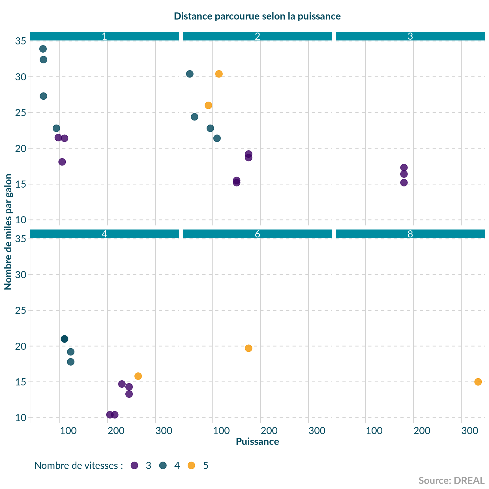
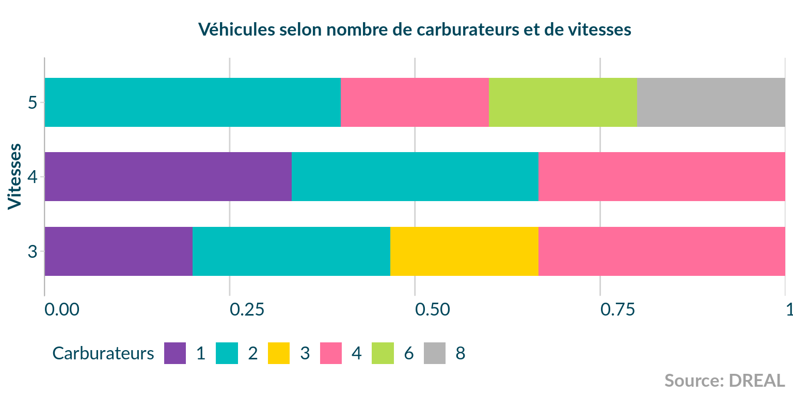
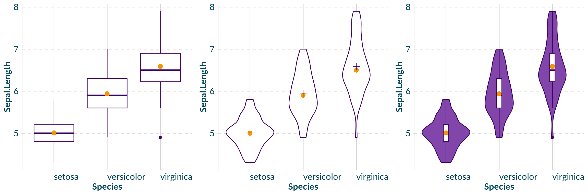

ggplot2 themes
ab-ggplot2-themes.RmdFonts
Les polices doivent être installées sur le système d’exploitation pour fonctionner correctement. Les polices nécessaires se trouvent dans le package, vous pouvez ouvrir le dossier de cette façon :
zip_fonts <- system.file("fonts.zip", package = "drealthemes")
tmp_dir <- tempdir()
invisible(unzip(zip_fonts, exdir = tmp_dir))
browseURL(file.path(tmp_dir, "fonts"))Installer les polices selon votre système d’exploitation. Suivre le lien de ce site web pour plus d’informations.
Ensuite, vous devrez utiliser check_fonts_in_r() pour vérifier que le package {extrafont} à accès aux polices installées.
Voici une sortie pour vérifier
g <- ggplot(mtcars) +
geom_point(aes(cyl, mpg)) +
labs(title = "Mon titre avec Roboto",
x = "lab X avec Lato",
y = "Lab Y avec Caveat") +
theme(title = element_text(family = "Roboto"),
axis.title.x = element_text(family = "Lato"),
axis.title.y = element_text(family = "Caveat")
)Créé :  Attendu :
Attendu : 
Thème ggplot2
Ce thème peut être défini globalement pour un Rmd ou une application Shiny avec theme_set(theme_dreal()). Cependant, créer des zones de couleurs différentes pour le titre ou la caption n’est pas possible de cette manière.
ggplot(mtcars) +
aes(hp, mpg, colour = as.character(gear)) +
geom_point(size = 4, alpha = .8) +
scale_color_dreal_d() +
ggtitle("Distance parcourue selon la puissance") +
labs(caption = "Source: DREAL",
colour = "Nombre de vitesses :",
x = "Puissance", y = "Nombre de miles par galon") +
theme_dreal_light()# facet plot
ggplot(mtcars) +
aes(hp, mpg, colour = as.character(gear)) +
geom_point(size = 4, alpha = .8) +
scale_color_dreal_d() +
facet_wrap(vars(carb)) +
labs(
title = "Distance parcourue selon la puissance",
caption = "Source: DREAL",
colour = "Nombre de vitesses :",
x = "Puissance", y = "Nombre de miles par galon") +
theme_dreal_light(caption.position = "right")
Autres graphiques
Barplot horizontal avec du texte
iris %>%
group_by(Species) %>%
summarise(mean_sepalLength = mean(Sepal.Length)) %>%
ggplot(aes(x = Species, y = mean_sepalLength )) +
geom_col(fill = dreal_cols("secondary_light"), width = 0.6) +
coord_flip(xlim = c(0.33, 3.66), expand = FALSE) +
theme_dreal_dark(flipped = TRUE)# Fill by discrete variable using default palette
mtcars %>%
group_by(gear, carb = as.character(carb)) %>%
summarise(n = n()) %>%
ggplot() +
geom_col(aes(as.factor(gear), n, fill = carb),
position = position_fill(reverse = TRUE),
width = 0.66) +
# dreal
scale_fill_dreal_d() +
theme_dreal(flipped = TRUE) +
coord_flip() +
# additionnal tweaks
scale_y_continuous(expand = expand_scale(0, 0)) +
labs(title = "Véhicules selon nombre de carburateurs et de vitesses",
x = "Vitesses", y = NULL, fill = "Carburateurs",
caption = "Source: DREAL") +
guides(fill = guide_legend(ncol = 6))
# Fill by discrete variable using default palette
mtcars %>%
group_by(gear, carb = as.character(carb)) %>%
summarise(n = n()) %>%
ggplot() +
geom_col(aes(as.factor(gear), n, fill = carb),
position = position_dodge2(),
width = 0.75) +
# dreal
scale_fill_dreal_d() +
theme_dreal_dark(flipped = TRUE) +
coord_flip() +
# additionnal tweaks
scale_y_continuous(expand = expand_scale(0, 0)) +
labs(title = "Véhicules selon nombre de carburateurs et de vitesses",
x = "Vitesses", y = NULL, fill = "Carburateurs",
caption = "Source: DREAL") +
guides(fill = guide_legend(ncol = 6))Lignes
ggplot(data = iris, aes(x = Sepal.Length, y = Sepal.Width,
colour = Species, shape = Species)) +
geom_point(size = 1.5) +
scale_color_dreal_d() +
labs(
title = "Width knowing length of iris sepals",
x = NULL, y = NULL,
colour = "Espèce", shape = "Espèce",
caption = "Fisher's et Anderson's"
) +
geom_smooth(method = "auto") +
theme_dreal(caption.position = "right")#> `geom_smooth()` using method = 'loess' and formula 'y ~ x'Violin/Boxplot
g1 <- iris %>%
ggplot(aes(x = Species, y = Sepal.Length)) +
geom_boxplot(color = dreal_cols("secondary_active")) +
theme_dreal()+
stat_summary(fun.y = mean, geom = "point", size = 3,
color = dreal_cols("warning_active"), shape = 16)
# OU
g2 <- iris %>%
ggplot(aes(x = Species, y = Sepal.Length)) +
geom_violin(color = dreal_cols("secondary_active")) +
theme_dreal() +
stat_summary(fun.y = median, geom = "point",
size = 3, color = dreal_cols("warning_active"),
shape = 16) +
stat_summary(fun.y = mean, geom = "point",
size = 3, color = dreal_cols("secondary_active"),
shape = 3)
## OU
g3 <- iris %>%
ggplot(aes(x = Species, y = Sepal.Length)) +
geom_violin(color = dreal_cols("secondary_active"),
fill = dreal_cols("secondary_light")) +
theme_dreal() +
geom_boxplot(width = 0.1, color = dreal_cols("secondary_active")) +
stat_summary(fun.y = mean, geom = "point",
size = 3, color = dreal_cols("warning_active"),
shape = 16)
# All possibilities
cowplot::plot_grid(plotlist = list(g1, g2, g3), ncol = 3)
Fixer les couleurs par défault
Il est possible de définir des couleurs par défaut pour les différents types de graphiques avec dreal_geom_defaults().
# Set dreal defaults
dreal_geom_defaults()
iris %>%
ggplot(aes(x = Species, y = Sepal.Length)) +
geom_violin()# Restore ggplot2 defaults
dreal_geom_defaults("ggplot2")
iris %>%
ggplot(aes(x = Species, y = Sepal.Length)) +
geom_violin()
Thème avec drealize pour un format de type multiplot
C’est le format le plus proche de la proposition graphique. Cependant, il ne fonctionne pas comme un theme classique. Il nécessite d’ajouter une fonction drealize à chaque graphique à la place de l’écriture du titre.
# directly in a plot
g <- ggplot(mtcars, aes(hp, mpg, colour = as.character(gear))) +
geom_point(size = 4, alpha = .8) +
scale_color_dreal_d()
g2 <- drealize(g,
title = "Plot created with drealize()",
caption = "Source: DREAL",
legend.position = "bottom")# facet plot
g3 <- ggplot(mtcars) +
aes(hp, mpg, colour = as.character(gear)) +
geom_point(size = 4, alpha = .8) +
scale_color_dreal_d() +
facet_wrap(vars(carb))
drealize(g3,
title = "Facet plot created with drealize()",
caption = "Source: DREAL",
legend.position = "bottom")Les graphiques avec légende à droite peuvent nécessiter de définir des tailles de sorties des graphs dans un Rmd pour ajuster les ratios